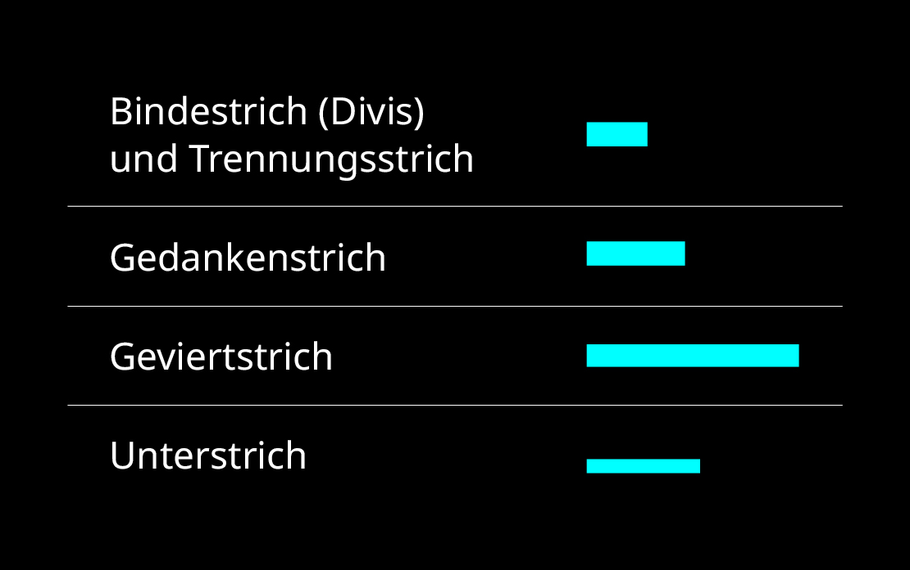

grafische
Striche
Bindestrich, Trennstrich, Gedankenstrich und Geviertstrich – Fachwörter, die uns Fachleuten im Alltag oft über den Weg laufen.
Doch fühlen wir uns wirklich schon so sicher in der Anwendung und Auswahl der korrekten Zeichen und wie wenden wir sie überhaupt im Webbereich an?
Egal ob in der Zeitung, im Buch oder auf Websites, Typografische Striche sind uns nützliche Helfer beim Gliedern
von Texten oder Trennen von Wörtern. Wer gekonnt die richtige Länge des Strichs wählt, sorgt für Ordnung in jedem Text und punktet bei den Kennern unter uns.
Übersicht
Hier eine Übersicht der wichtigsten und meist verwendetsten typografischen Striche und wie sie sich in ihren Strichlängen unterscheiden:
und Trennstrich
Eigenschaft
Am häufigsten verwendet wird der Bindestrich, auch Divis genannt (lat: divisum, das Geteilte).
Er zeigt sich häufig am Ende einer Zeile, wenn ein Wort getrennt werden muss und steht nie
zwischen zwei Leerzeichen. Auch beim Kuppeln von Wörtern und bei der Schreibweise von Datumsangaben wird er eingesetzt. Er verbindet, was zusammengehört.
Anderst der Trennstrich, der seinem Namen nach für das Trennen zuständig ist. Jedoch sehen diese beiden Striche exakt gleich aus.
Beispiele
Freiland-Eier
2010-05-01
Haushalts-
papier
Webeinsatz
Diese beiden Striche sind unkompliziert in der Handhabung im Web. Kein spezieller Code muss dafür angewendet werden.
Wird jedoch in einer Domain ein Bindestrich verwendet, zum Beispiel:
logrinto.github.io/IAD2019.type-terms/,
der auf keinen Fall getrennt werden darf, so verwendet man für den Strich das Kürzel: ‑
Eigenschaft
Er misst genau die Hälfte der historischen Masseinheit «Geviert», desswegen ist er auch bekannt als Halbgeviertstrich. Er sorgt im Lesetext für eine «Gedankenpause», wo er immer zwischen zwei Leerzeichen zu finden ist. Im Gegensatz zur Anwendung als Streckenstrich, wo kein Abstand gesetzt wird. Weitere Anwendungen sind Bis-Angaben, Nullersatz und Aufzählungen.
Beispiele
Heute ist ein schöner Tag – und ich muss arbeiten.
Frauenfeld–Zürich
9–18 Uhr
120.– CHF
– Hans Keller
– Frank Zimmer
– Laura Fopp
Webeinsatz
In der Programmiersprache bringt uns das Kürzel − den Gedankenstrich auf die Website.
Ein «non breaking space», vor und nach dem Strich, sorgt ausserdem dafür, dass der Gedankenstrich nicht alleine
am Ende der Zeile steht. Dafür nutzt man das Kürzel: .
Eigenschaft
Den Geviertstrich sieht man im Vergleich zu den anderen typografischen Strichen fast gar nicht. Er wird in der deutschen Sprache so gut wie nie eingesetzt. Im Englisch und Spanisch wird er aber oft als Gedankenstrich eingesetzt. Trotzdem gibt es Einsatzbereiche, bei denen er auch bei uns zum Zug kommt, wie zum Beispiel als Ersatz der Nullen bei einem Geldbetrag, meist in Tabellen, um alle Zahlen untereinander zu behalten.
Beispiele
15.—
50.— Franken
Webeinsatz
Kommt es einmal zum Einsatz dieses Strichs, ist es gut zu wissen, wie man ihn im html-Code einsetzen kann.
Dafür benötigt man die Kombination: —.
Eigenschaft
Vorallem im Computerbereich trifft man heutzutage auf den Unterstrich. Er ist etwas länger als der Gedankenstrich und nimm die ganze Breite der Dickte ein, inklusive Vor- und Nachbreite. Eingesetzt wird er zur gender-sensiblen Schreibweise oder im digitalen Bereich bei der Bezeichnung von Dokumenten oder Ordnern. Seinen Ursprung entstammt der Programmiersprache, wo er als Verbindung benutzt wird, und nicht als Trennung von Etwas.
Beispiele
Polygraf_in
mein_dokument_v1
Webeinsatz
Früher war der Unterstrich in URL's ein Ersatz für das Leerzeichen. Da der Leerraum mittlerweile überall richtig kodiert ersetzt wird, ist die Bedeutung des Unterstriches als Ersatz zurückgegangen. Er dient regelrecht noch dort als Leerzeichen, wo dieses nicht erlaubt ist. Beispielsweise in Mail-Adressen (sina_muster@schule.ch). Die Eingabe im Code wird korrekt übersetzt beim Drücken von Shift und dem Strichzeichen.
Noto Sans
Ich wollte meine Schriftwahl möglichst neutral halten und begab mich auf Google Fonts auf eine serifenlose Schrift. Mir kam schnell die Schrift Noto Sans in den Blick und untersuchte, ob diese für mein Thema passend wäre.

Quellen
«Typografie im Web» von Stefan Huber (IAD)
typeschool.de
fernstudi.net
pt-mediengestaltung.de
©Sina Obitsch
IAD 19, Zürich im Juli 2020
LAB bei Stefan Huber